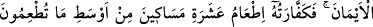
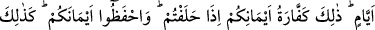
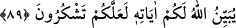

YEMİN VE KEFFARETİ
89. Allah, kasıtsız olarak ağzınızdan çıkıveren yeminlerinizden dolayı sizi
sorumlu tutmaz, fakat bilerek yaptığınız yeminlerden ötürü sizi sorumlu tutar.
Bunun da keffâreti, ailenize yedirdiğiniz yemeğin orta hallisinden on fakire
yedirmek, yahut onları giydirmek, ya da bir köle azad etmektir. Bunları bulamayan
üç gün oruç tutmalıdır. Yemin ettiğiniz zaman yeminlerinizin kaffâreti işte budur.
Yeminlerinizi koruyun (onlara riayet edin). Allah size âyetlerini açıklıyor ki
şükredesiniz.
“Allah kasıtsız olarak ağzınızdan çıkıveren yeminlerinizden dolayı sizi sorumlu
tutmaz.” Yemin, Allah’ın adını anarak bir bilginin iki ihtimalinden birini
kuvvetlendirmektir. Yemin-i lağv ise kendisine bir hüküm taalluk etmeyen boş yemindir.
İmam-ı A’zam’a göre yemin-i lağv, kişinin bir konuda doğru olduğunu zannederek
yaptığı yemindir. Halbuki zannettiği gibi değildir. Mesela uzaktan bir şey görüp öyle
olmadığı halde öyle zannederek “Vallahi, o öyledir.” demek gibi. Bu tür yeminlerde ne
günah ne de keffaret vardır.
Yemin-i gamûs ise geçmişteki veya şimdiki bir konuyla ilgili olarak bile bile yalan
yemin etmektir. Mesela yapmadığı bir şeyi: “Vallahi, şöyle yaptım.” demek gibi. Yahut
borcu olduğunu bildiği halde “Vallahi benim ona borcum yok.” demek gibi. Bu yemin
büyük günahlardandır. Bir hadiste: “Kim yalan yere yemin ederse Allah onu
cehenneme koyar.”[30] buyurulmuştur. Bunun tevbe dışında keffareti de yoktur.
Âyetin mânâsı, Allah sizi üzerine dünyevî veya uhrevî bir hüküm taalluk etmeyen boş
yeminlerinizden ötürü sorumlu tutmaz, demektir.
“Fakat bilerek yaptığınız yeminlerden ötürü sizi sorumlu tutar.” Kasıt ve niyetinizin
ne olduğunu bilerek yaptığınız yeminlerinizi bozmanızdan, ondan dönmenizden Allah
sizi sorumlu tutar. Sorumluluk konusu “yeminlerden dönmek” olmasına rağmen âyette
zikredilmemiştir. Çünkü bu bilinen birşeydir. Bu tür yeminlere de “yemîn-i mün’akide”
denir. Kişinin gelecekte bir işi yapacağına ya da yapmayacağına dair yaptığı yemindir.
“Bunun da keffâreti” fiilen “âilenize yedirdiğiniz yemeğin orta hallisinden on